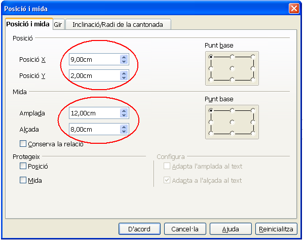
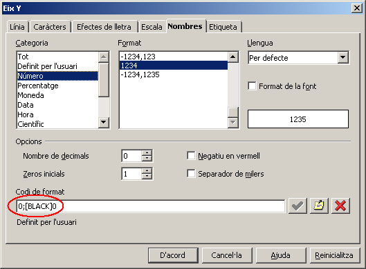
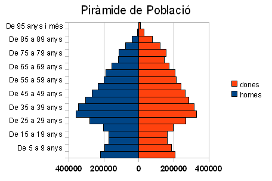
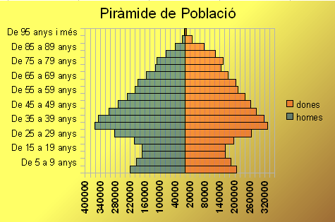
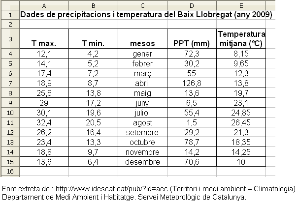
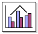
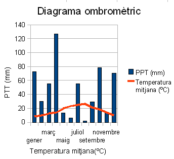
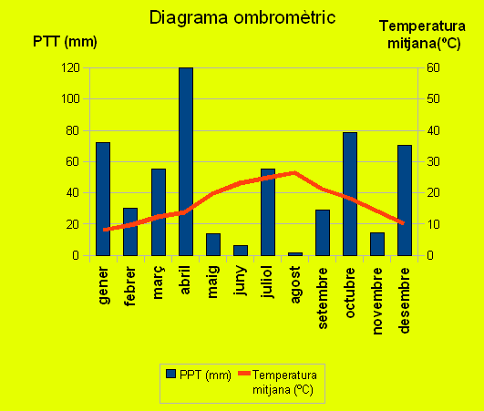

UF4. Fulls de càlcul
Pràctica 2 - Exercici 2
Realitzar gràfics sobre dades de població, clima, produccions, ...
Dades de població
Recolliu les dades
- Accediu a l' anuari estadístic de Catalunya
- Fer clic en Població | Estructura de la població | Població. Per sexe i grups d'edat.
- Havent-ho fet es veu, la informació sobre Població 2001.2010 Per sexe i grups d'edat.
- Fent clic on hi ha escrit En Excel es descarrega el fitxer aec-253.xls
Prepareu les dades
- Obrir el full de càlcul i canviar el nom de Full1 pel de M2 P2 dades
- Obrir el fitxer aec-253.xls i fer clic al selector de columnes i files per seleccionar tot el full. Tenint tot el full seleccionat, copiar (Ctrl+C) i anar al full M2 P2 dades i situar-se a la cel·la A1 (cel·la activa) per a enganxar (Ctrl+V)
- Canviar el nom del Full2 pel de M2 P2 que serà el full on es faren els diagrames corresponents
Una cel·la o un grup de cel·les es poden definir amb un nom (un nom sense espais en blanc ni símbols especials).
Definirem el rang de cel·les A5:A24 del full M2 P2 dades amb el nom d'edats de la següent manera:
Seleccionar el rang A5:A24 i prémer Ctrl+F3 per mostrar una finestra anomenada Defineix els noms en la qual s'escriu la paraula edats i fer clic en d'acord. Havent-ho fet, es va a la cel·la A5 del full M2 P2 i escrivim la fórmula =edats i prenem intro per veure que aquesta cel·la A5 tindrà el mateix contingut de la cel·la A5 del full M2 P2 dades ("De 95 anys i més").
Seguint el mateix procediment, fer que:
- el rang B5:B24 del full M2 P2 dades es digui homes
- el rang C5:C24 del full M2 P2 dades es digui dones
Ens situem al full M2 P2 i escrivim:
- a la cel·la A4: edats
- a la cel·la B4: homes
- a la cel·la C4: dones
- a la cel·la A5: =edats (amb la qual cosa apareix el contingut de la de la cel·la A5 del full M2 P2 dades)
- a la cel·la B5: =-homes (el signe menys a la fórmula permetrà, en fer el gràfic de barres, que les dels homes quedin oposades al dibuix de les barres de les dones)
- a la cel·la C5: =dones
Seleccionem el rang A5:C5 i l'extenem fins a la fila 24 mostrant així les llistes que serviran per fer els corresponents diagrames
Fent el diagrama
- Seleccioneu les cel·les des del rang A4:C24
- Premeu l'eina
 Insereix un diagrama i feu clic en qualsevol indret del full (el Calc us mostrarà l'assistent per a gràfics). Seguiu aquests passos:
Insereix un diagrama i feu clic en qualsevol indret del full (el Calc us mostrarà l'assistent per a gràfics). Seguiu aquests passos: - Trieu el tipus de diagrama Barres amb la variant Apilat i premeu següent
- Es mostra el 2n pas (interval de dades). Deixeu les propostes de l'assistent quant a àrea i etiquetes i premeu el botó Següent
- Es mostra el 3r pas (Sèrie de dades). Deixeu les propostes de l'assistent quant a àrea i etiquetes i premeu el botó Següent
- Es mostra el 4t pas (Elements del diagrama) on s'escriu a la casella de Títol: Piràmide de Població i fem clic en Finalitza
- Feu clic en qualsevol cel·la del full i torneu a fer clic sobre el gràfic
- Premeu el botó dret sobre el gràfic i escolliu Posició i mida del menú de context
- Canvieu els valors tal com es mostren a la figura
 - Feu doble clic sobre el gràfic (observeu el canvi de les vores de l'objecte)
- Feu doble clic sobre qualsevol de les barres del diagrama (obtindreu el diàleg Sèrie de dades)
- En la pestanya Opcions, configureu l'espaiat al 0%
- Premeu el botó D'acord
- Feu clic amb el botó dret sobre l'eix horitzontal (Eix Y) i escolliu l'opció Propietats de l'objecte
- En la pestanya Caràcters, establiu la Mida de la lletra a 9 punts
- En la pestanya Nombres, desactiveu la casella Format de la font i, en Codi de format, escriviu 0;[black]0, tal com veieu a la figura
 - Premeu D'acord
- Feu clic amb el botó dret sobre l'eix vertical (Eix X) i escolliu l'opció Propietats de l'objecte
- En la pestanya Caràcters, establiu la Mida de la lletra a 9 punts
- Premeu D'acord
- Per fer que les dades corresponents a la capçalera d'edat es vegin a l'esquerra del diagrama, fer doble clic a l'eix de la x (Eix X) per mostrar la finestra anomenada Eix X i llavors fer clic a la pestanya Posicionament per fer clic al desplegabe del bloc Etiquetes per triar l'opció Prop de l'eix.
- Desar el fitxer amb el nom de M2
- Si tot ha anat bé, us haurà quedat un gràfic similar a aquest
 - I que variant les propietats de l'àrea del diagrama, podria quedar com el següent

El clima
Recolliu les dades
- Accediu a l' anuari estadístic de Catalunya
- Fer clic en Territori i medi ambient i clic en Climatologia. Les dades que hi ha en el següent gràfic s'han tret dels apartats:
- Termometria. Temperatures màximes. Comarques T
- Termometria. Temperatures mínimes. Comarques T
- Pluviometria. Precipitació mensual. Comarques T
Prepareu les dades
- Obrir el fitxer M2 i canvieu el nom de Full3 pel de M2P2 Clima. En aquest full introduir les dades de forma que l'aspecte sigui similar al següent:

- Les dades de la columna Temperatura mitjana (ºC), per al mes de gener, s'aconsegueixen amb la fórmula =MITJANA(A4;B4)
- La resta dels valors els podeu aconseguir copiant aquesta fórmula en el rang E5:E15
Dibuixeu el gràfic
- Seleccioneu el rang de dades C3:E15
- Premeu l'eina Insereix un diagrama i feu clic sobre qualsevol indret del full. El Calc us mostrarà l'assistent.
- 1r pas (tipus de diagrama): Escolliu el tipus de diagrama Columna i línia i premeu Següent

- En el 2n pas (interval de dades) no es modifica res i fer clic en següent
- En el 3r pas (Sèrie de dades) no es modifica res i fer clic en següent
- En el 4t pas (Elements del diagrama) fer el següent:
- Al Títol del diagrama escriviu: Diagrama ombromètric
- Activeu la casella Eix X i escriviu Temperatura mitjana(ºC)
- Activeu la casella Eix Y i escriviu PTT (mm)
- Premeu Finalitza

Modifiqueu el gràfic
- Feu clic en qualsevol cel·la del full de càlcul i torneu a fer clic sobre el gràfic per seleccionar-lo.
- Feu clic, ara amb el botó dret, sobre el gràfic i escolliu l'opció Posició i mida
- En la pestanya Posició i mida del diàleg, escriviu 12 cm per l'amplada i 10 cm per l'alçada.
- Premeu el botó D'acord
- Feu doble clic sobre el gràfic per poder accedir a la formatació dels seus elements.
- Demaneu el menú Format | Eix | Eix Y i, de la finestra que obtindreu, premeu la pestanya Escala:
- Desactiveu la casella Automàtic corresponent al valor Màxim a representar
- Escriviu el valor 120 en comptes del que ofereix.
- Premeu el botó D'acord
- Demaneu el menú Insereix | Eixos
- Marqueu la casella Eix secundari / Eix Y
- Premeu D'acord
- Demaneu el menú Format | Eix | Eix y secundari i, de la finestra que obtindreu, premeu la pestanya Escala:
- Desactiveu la casella Automàtic corresponent al valor Màxim a representar
- Escriviu el valor 60 en comptes del que ofereix.
- Premeu el botó D'acord
Cal tenir present que, en els diagrames ombromètrics , els valors de les precipitacions es representen a doble escala que els valors de les temperatures
- Demaneu Format | Llegenda
- Premeu la pestanya Posició
- Activeu Posició / Baix (Part inferior)
- Premeu D'acord
- Demaneu Format | Títol | Títol (Eix Y)
- Premeu la pestanya Alineament o Alineació
- Canvieu a 0 graus el valor de la direcció d'escriptura
- Premeu la pestanya Caràcters
- Canvieu la mida de la lletra a 10 punts i la Tipografia a Negreta
- Premeu D'acord
- Demaneu Format | Títol | Títol (Eix X)
- Premeu la pestanya Caràcters
- Canvieu la mida de la lletra a 10 punts i la Tipografia a Negreta
- Premeu D'acord
- Demaneu Format | Eix | Eix X
- Premeu la pestanya Etiqueta i canvieu a 90 graus el valor de la direcció d'escriptura
- Canvieu la mida de la lletra a 10 punts i la Tipografia a Negreta
- Feu clic sobre el títol de l'eix Y per seleccionar-lo
- Torneu a fer clic amb el botó dret i, de les opcions, escolliu Posició i mida
- Canvieu la Posició X a 0,80 cm
- Canvieu la Posició Y a 0,84 cm
- Premeu el botó D'acord
- De forma similar, canvieu la posició del títol de l'eix X a 9,40 cm i 0,45 cm
- Feu doble clic en qualsevol de les barres del diagrama i torneu a fer clic amb el botó dret del ratolí i, de les opcions, escolliu Posició i mida
- Canvieu la Posició X a 1,50 cm
- Canvieu la Posició Y a 1,50 cm
- Premeu el botó D'acord
- Feu doble clic sobre la línia que representa la temperatura
- En la pestanya Opcions activeu Alinea la línia de dades a / 2n eix Y (Eix Y secundari)
- En la pestanya Línia canvieu l'Amplada a 0,1 cm
- Premeu D'acord
- Finalment, demaneu Format | Àrea del diagrama
- En la pestanya Àrea canvieu el color a Groc 1
- Premeu D'acord
- Si tot ha anat bé haureu obtingut un resultat similar a aquest:
